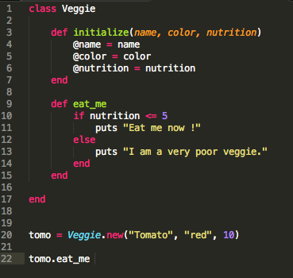

To the Class! Now !
Make Class You would use class if you want to create many objects which are some how related. For example you want to start eat healthier, you can create class called veggie. So an instance of the class would be different veggies like carrot, tomato, ect. Every veggie would have properties like color, name and nutritions. Since every veggie has those attribiutes, you would put them in initialize method. Method which is callse every time when new object is created. So if you would create this method with 3 attributes and then new instance of a class ( our veggie ), but you would not pass any argument to the veggie then your code would error out that you have notenough arguments. So going back to our logic, let's say that we want to eat only veggies which have 5 nutritions or more. Then we can create method EAT_ME when we specify whichi veggies we want to eat. To call this metgos, we assign it to instance of a class. ................................................................  ................................................................